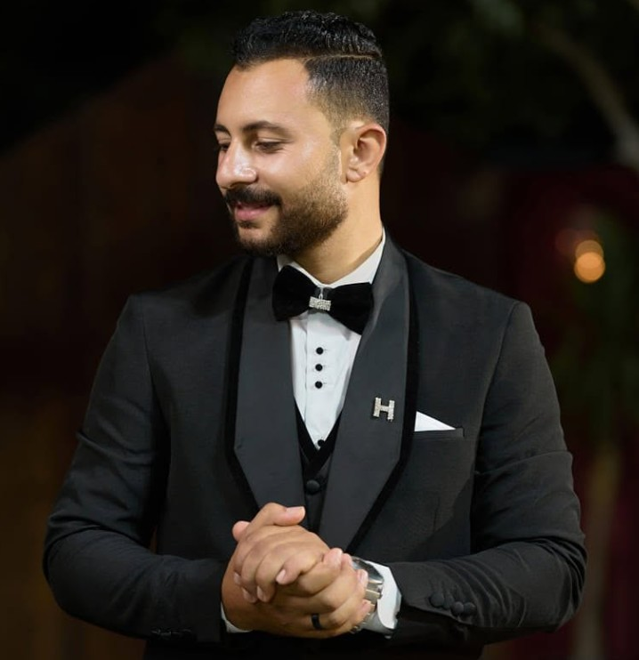

NASHEED TEAM • AHMADIAH YOUTH CENTER
صوتٌ جميل… ورسالةٌ تصل إلى القلوب
يدعو مركز شباب الأحمدية أصحاب الأصوات المميزة ومحبي الإنشاد الديني إلى الانضمام لفريق الإنشاد الديني، والمشاركة في تقديم أعمال إنشادية هادفة، مع التدرّب على المقامات الصوتية وأساسيات الأداء.
التدريب وقيادة الفريق مع المنشد المتميز:
مصطفى الحسن

المنشد مصطفى الحسن
قائد فريق الإنشاد الديني
ماذا ستتعلم مع الفريق؟
🎼 تعلّم المقامات
التعرّف على المقامات الصوتية والتدرّب على الانتقال بينها بصورة مبسطة وعملية.
🎙️ فنون الإنشاد
تطوير الأداء والتحكم في الصوت والتنفس ومخارج الحروف أثناء الإنشاد.
🤝 المشاركة الجماعية
التدريب ضمن فريق واحد والاستعداد للمناسبات والفعاليات الدينية والثقافية بالمركز.
ابدأ رحلتك مع فريق الإنشاد
للاستفسار والتسجيل تواصل مع المنشد مصطفى الحسن
01275612021